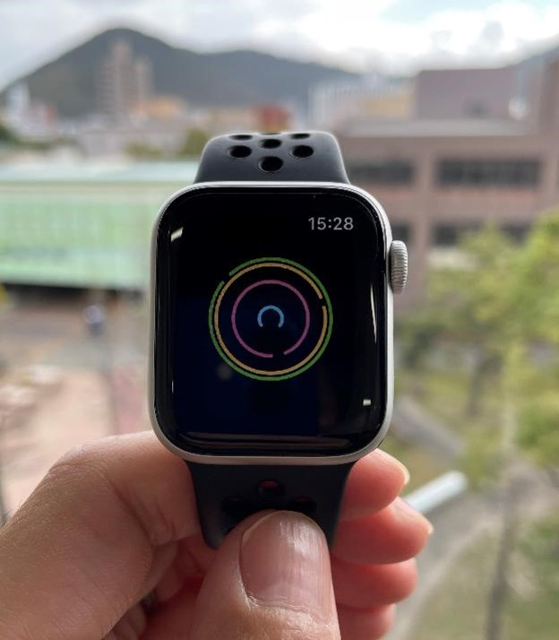

# 成果
北村研究室は2021年2月からスタートしました．ここには2021年2月からの実績を掲載します． 北村の2021年1月までの成果はresearchmap (opens new window)をご覧ください．
# 2021年
# 国内研究会
- 楊 文通, 北村 尊義, 泉 朋子: 街づくりゲームを用いた観光行動促進支援システムの開発, 情報処理学会第83回全国大会, 7K-07 (2021).
- 蔡 銘, 北村 尊義, 泉 朋子: 避難者の受容性を考慮した多目的GAに基づく避難経路推薦手法の提案, 情報処理学会第83回全国大会, 5ZA-02 (2021).
# 記事
- 北村尊義: この研究に倫理審査は要りますか？Case4, ヒューマンインタフェース学会誌, Vol.23, No.2, pp.28-29 (2021).
# 採択研究
道路外を通行して避難すべきかの判断を補助するスマートウォッチによる情報提供手法 (opens new window)日本学術振興会 科学研究費助成事業 若手研究 2021年4月 - 2024年3月 （手続き中）
不便の効用を活かす人ーモノ系のデザイン論 (opens new window) 日本学術振興会 科学研究費助成事業 基盤研究(B) 2018年4月 - 2021年3月 川上 浩司, 平岡 敏洋, 西本 一志, 岡田 美智男, 仲谷 善雄, 泉 朋子, 北村 尊義